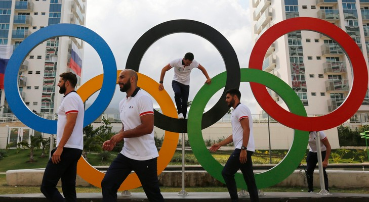
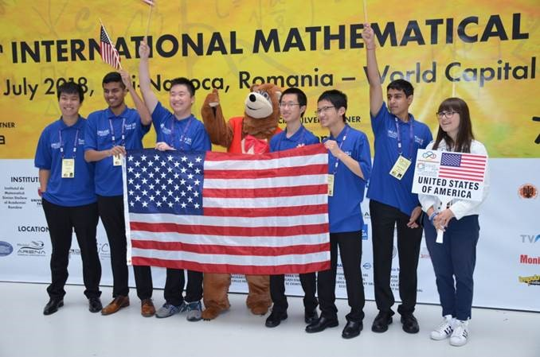
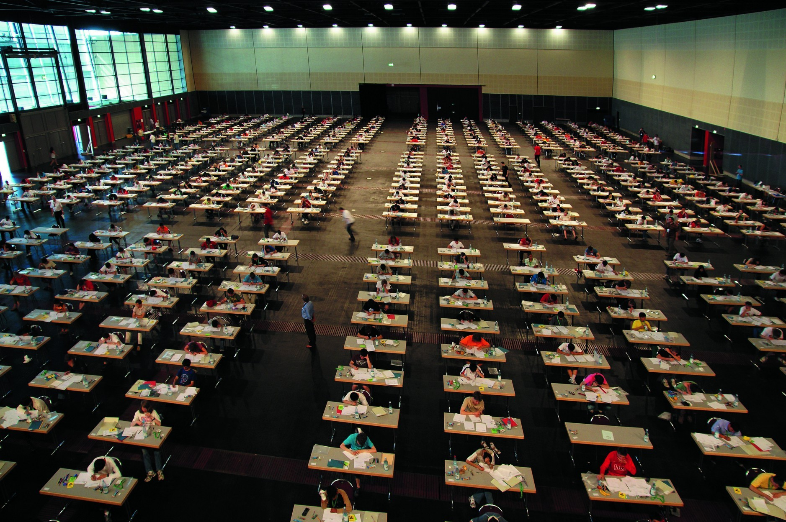
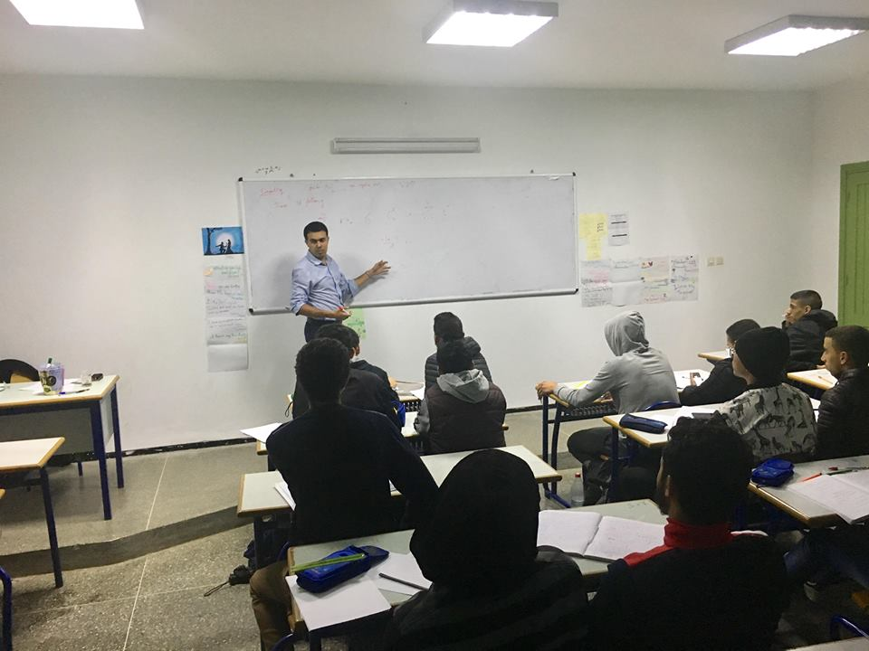
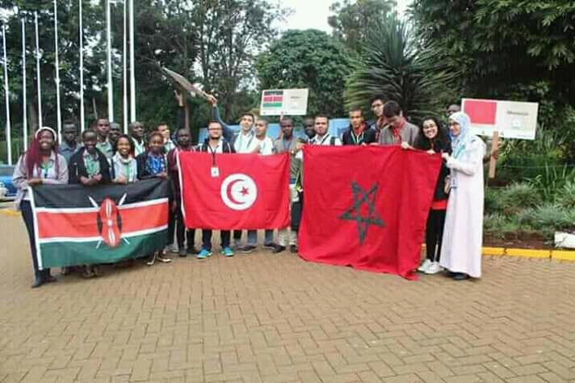
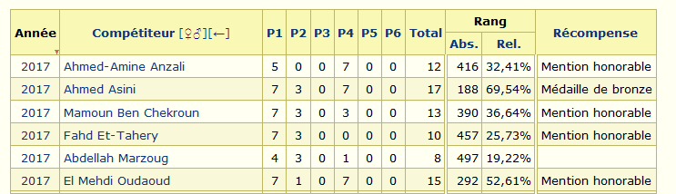
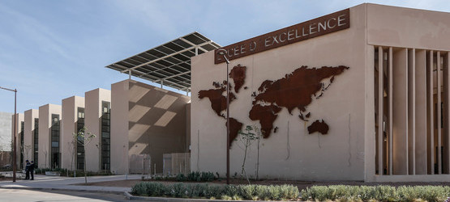

Projet à but non lucratif dirigé par EMPIMO, hebérgé par Github.
Bienvenue visiteur!
EMPIMO vous explique : les OIM !
Evidemment, on connait tous les compétitions olympiques sportives organisées chaque année dans un pays, une tradition qui revient à l’antiquité grecque , l’Olympe ! En effet, il existe des versions scientifiques de ces jeux olympiques , comme les Olympiades Internationales de Physique (IPhO), Olympiades Internationales de Chimie (IChO), Olympiades Internationales de Biologie (IBO), Olympiades Internationales d’Informatique (IOI) et bien sûr les Olympiades Internationales des Mathématiques (IMO)[1].
Parlons aujourd’hui de cette dernière, les OIM ou les IMO en anglais. Cette compétition est considérée la plus prestigieuse parmi les 5 notées. Conçue pour les élèves lycéens ayant des talents spéciales en mathématiques, elle est organisée chaque année dans un pays du monde par le Comité International des OIM . La compétition dure environ 10 jours, entre cérémonie d’ouverture et de clôture, réunion des délégations de chaque équipe, tournés touristiques et 2 jours de tests successifs. Chaque test parmi les 2 contient 3 problèmes de difficulté ascendante, choisis parmi les problèmes de la « Short List » confidentielle et homologuée par le Comité International et proposés auparavant par les délégations de chaque pays. Environ 120 pays y participent, notamment les Etats-Unis, la Russie, les pays de l’Asie Sud-Est et les pays européens ainsi que certains pays Arabe, comme le Maroc, la Tunisie et l'Algérie.
La première édition des OIM date à 1959 à la Roumanie , qui est arrivée à dominer le classement pour 3 ans successifs. A chaque édition, chacun des pays participants doit choisir son équipe nationale qui lèvera son drapeau, elle est composée de 6 compétiteurs au maximum accompagnés d’une délégation.
Le choix des compétiteurs passe par des procédures différentes selon chaque pays. Au Maroc , un mémorandum ministériel[2] défini les normes de cette procédure, il a reconnu plusieurs changements entre les années 80e et l’année 2020. Actuellement, une olympiade nationale composée de 6 épreuves et 3 phases de qualification est organisée par le Centre National d’Innovation Pédagogique et d’Expérimentation (CNIPE) pour les élèves du tronc commun scientifique entre novembre et avril , afin de définir la liste nationale des 50 premiers candidats. Ces candidats seront convoqués après pour assister à une série de formations mathématiques avancées et des tests éliminatoires à Rabat qui se terminent par le dernier test décisive: le TST (Team Selection Test) de niveau comparable à celui des problèmes de la Short List, et qui a le plus grand coefficient parmi ces tests.
On note que les élèves du 7ème au 14ème du classement présentent le Maroc dans d'autres compétitions régionales : l'Olympiade Mathématique Pana-Africaines (PAMO)[3], l'Olympiade Mathématique Arabe (AMO) et la Compétition Mathématique Méditerranéenne Junior (MYMC)[4] ou même l'Olympiade Mathématique d'Asie et du Pacifique (APMO)[5]. A noter aussi que les élèves qui ont été privé pour plusieurs raisons de participer aux éliminatoires des olympiades au TC ou qui ont été disqualifiés avant le premier stage obtiennent une deuxième chance à la 1ère année baccalauréat Sciences Maths en passant 2 tests éliminatoires afin de choisir les 40 premiers candidats qui rejoindront les 50 autres. Par ailleurs et depuis 2020, l'organisation des olympiades commence désormais depuis le collège[6] et de manière régionale.
Depuis l’année 2017, la jeune association Math&Maroc participe en partenariat avec le CNIPE à l’encadrement des stages olympiques en recrutant les anciens IMOistes marocains pour transmettre leur expérience olympique aux futurs candidats. Une noble initiative des membres de l’association et qui a positivement influencé les résultats honorables des promotions 2017 et 2020. La formation dure donc les 3 ans du secondaire qualifiant. Les OIM sont généralement organisés le mois de juillet. Les frais du voyage de l’équipe nationale sont recouverts par l’Office Chérifienne de Phosphate (OCP). Le Maroc compte dans son histoire olympique 66 mentions honorables, 35 médailles de bronze et 4 médailles d’argent. Aujourd’hui, le CNIPE en partenariat avec l’association M&M cherchent tous les moyens et stratégies possibles pour améliorer le rang international du Maroc aux OIM.
Quels sont donc les bienfaits de la participation à ces olympiades ? Une question que la plupart des élèves se posent en pensant à la futilité des activités parascolaires… En effet, la participation aux compétitions mathématiques de manière générale aide à développer les compétences mentales dans la résolution des problèmes de thème mathématique, à développer l’esprit analytique et algorithmique et à acquérir un grand bagage mathématique indispensable pour exceller les épreuves du baccalauréat afin de pouvoir facilement intégrer les classes préparatoires (CPGE) et les grandes écoles ainsi que participer au concours général des sciences et techniques (CGST) et tenter de bénéficier d’une bourse d’excellence aux études supérieures offerte par l’académie Hassan II. En outre, les candidats olympiques finalistes bénéficient généralement de plusieurs facilités en intégrant les CPGE , les écoles d’ingénieries françaises et le LyDex Benguerrir. Bref , on ne peut pas passer par cette expérience sans en tirer des bénéfices[7] !
Dernière mise à jour : 1 juillet 2020
Lire en détails:
[2]: le mémorandum ministériel organisant les olympiades au lycée au Maroc
[3]: site web PAMO
[4]: site web MYMC
[5]: site web APMO
[6]: le mémorandum ministériel organisant les olympiades au collège au Maroc
[7]: Une Médaille de Bronze aux IMO: Comment se préparer - Journal Math&Maroc
www Liens Connexes
@ Contactez-nous
www.facebook.com/EMPIMOly
Email :
empimoly@gmail.com
+212617096371 (MAR)
++ Rejoignez-nous !
Soyez membre de notre grande communanuté Facebook :
Equipe Marocaine de Préparation aux IMO
Suivez notre chaine YouTube :
EMPIMO Olympic MOOC
Abonnez vous à notre Newsletter :
Responsable et créateur de la bibliothèque :
Hamza Ba-mohammed, co-directeur fondateur de l'EMPIMO.
 EMPIMO 2020. Tous les droits sont réservés. | Version 4.0
EMPIMO 2020. Tous les droits sont réservés. | Version 4.0